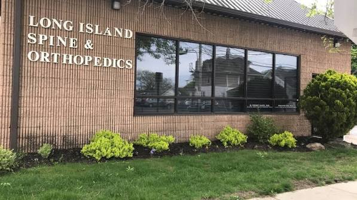

Spine Care and Microsurgery
Specialized evaluation for complex spinal conditions, from herniated discs to spinal stenosis decompression.
Patient-Centered Orthopedic Care
Clear answers, thoughtful treatment, and a plan designed around your goals. Long Island Spine and Orthopedics provides focused spine and orthopedic care in Hicksville.
Dr. Philip M. Rafiy, MD Spine and Orthopedic Surgery
Clinical Focus
We take time to understand your symptoms, explain your options in plain language, and help you take the next step with confidence.
Specialized evaluation for complex spinal conditions, from herniated discs to spinal stenosis decompression.
Comprehensive care for knee and hip, shoulder repair, fracture care, and adult musculoskeletal conditions.
Safe recovery protocols built around post-operative milestones or conservative management strategies.
The Physician
Dr. Philip M. Rafiy is an experienced orthopedic surgeon specializing in spine surgery and adult musculoskeletal care. He is committed to helping each patient understand their condition and take clear steps toward healing.

87 W Old Country Rd, Hicksville, NY
Hicksville Clinic
Our office is easy to reach with free onsite patient parking behind the building. Visit our office page for hours, directions, and to request an appointment.
Get Started
Request an appointment online or contact our Hicksville office to speak with our staff.
Or call us at (516) 433-1100